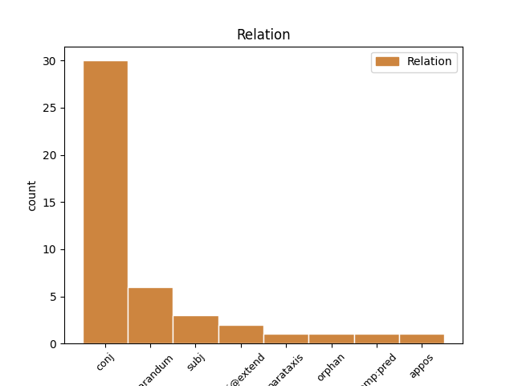
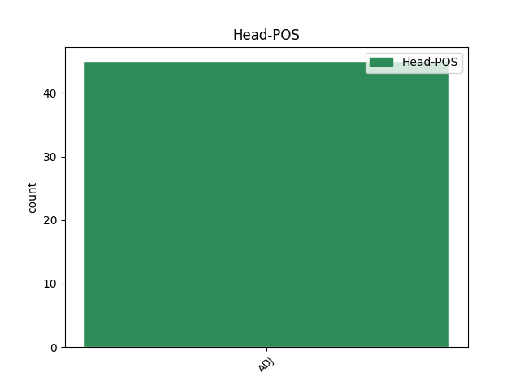
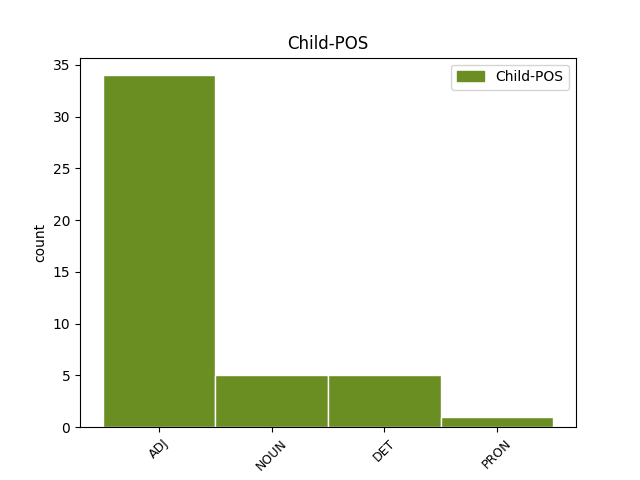

Distribution of features within this leaf



Agreement Rules sorted by frequency.
- When the dependent token is the conjunct(conj) of the head token, and the head token is ADJ and the dependent token is ADJ.
1 eee _ _ _ _ 0 _ _ _
2 še _ _ _ _ 0 _ _ _
3 mi _ _ _ _ 0 _ _ _
4 sem _ _ _ _ 0 _ _ _
5 na _ _ _ _ 0 _ _ _
6 trenutke _ _ _ _ 0 _ _ _
7 zelo _ _ _ _ 0 _ _ _
8 občutljiva _ _ _ _ 0 _ _ _
9 na _ _ _ _ 0 _ _ _
10 mrzlo mrzel ADJ Agpnsa Case=Acc|Degree=Pos|Gender=Neut|Number=Sing 0 _ _ _
11 eee _ _ _ _ 0 _ _ _
12 pa _ _ _ _ 0 _ _ _
13 toplo topel ADJ Agpnsa Case=Acc|Degree=Pos|Gender=Neut|Number=Sing 10 conj _ msd=Ppnset|word=toplo
1 ali _ _ _ _ 0 _ _ _
2 kaj _ _ _ _ 0 _ _ _
3 je _ _ _ _ 0 _ _ _
4 kaj _ _ _ _ 0 _ _ _
5 je _ _ _ _ 0 _ _ _
6 pri _ _ _ _ 0 _ _ _
7 koaliciji _ _ _ _ 0 _ _ _
8 slovenija _ _ _ _ 0 _ _ _
9 podobno podoben ADJ Agpnsn Case=Nom|Degree=Pos|Gender=Neut|Number=Sing 10 reparandum _ msd=Ppnsei|word=podobno
10 podobno podoben ADJ Agpnsn Case=Nom|Degree=Pos|Gender=Neut|Number=Sing 0 _ _ _
11 [incident] _ _ _ _ 0 _ _ _
12 čki _ _ _ _ 0 _ _ _
13 jaz _ _ _ _ 0 _ _ _
14 ne _ _ _ _ 0 _ _ _
15 razumem _ _ _ _ 0 _ _ _
16 glej _ _ _ _ 0 _ _ _
17 to _ _ _ _ 0 _ _ _
18 je _ _ _ _ 0 _ _ _
19 kao _ _ _ _ 0 _ _ _
20 to _ _ _ _ 0 _ _ _
21 je _ _ _ _ 0 _ _ _
22 najbolj _ _ _ _ 0 _ _ _
23 odmevna _ _ _ _ 0 _ _ _
24 satirična _ _ _ _ 0 _ _ _
25 izjava _ _ _ _ 0 _ _ _
26 eee _ _ _ _ 0 _ _ _
27 eee _ _ _ _ 0 _ _ _
28 in _ _ _ _ 0 _ _ _
29 jaz _ _ _ _ 0 _ _ _
30 sploh _ _ _ _ 0 _ _ _
31 ne _ _ _ _ 0 _ _ _
32 razumem _ _ _ _ 0 _ _ _
33 zakaj _ _ _ _ 0 _ _ _
34 koalicija _ _ _ _ 0 _ _ _
35 slovenija _ _ _ _ 0 _ _ _
36 s _ _ _ _ 0 _ _ _
37 [incident] _ _ _ _ 0 _ _ _
38 čko _ _ _ _ 0 _ _ _
39 … _ _ _ _ 0 _ _ _
40 ja _ _ _ _ 0 _ _ _
1 no _ _ _ _ 0 _ _ _
2 sedaj _ _ _ _ 0 _ _ _
3 še _ _ _ _ 0 _ _ _
4 veliko _ _ _ _ 0 _ _ _
5 bolj _ _ _ _ 0 _ _ _
6 toplo topel ADJ Agpnsn Case=Nom|Degree=Pos|Gender=Neut|Number=Sing 0 _ _ _
7 in _ _ _ _ 0 _ _ _
8 tu _ _ _ _ 0 _ _ _
9 spodaj _ _ _ _ 0 _ _ _
10 resnično _ _ _ _ 0 _ _ _
11 povsem _ _ _ _ 0 _ _ _
12 povsem _ _ _ _ 0 _ _ _
13 drugačne _ _ _ _ 0 _ _ _
14 razmere razmera NOUN Ncfpn Case=Nom|Gender=Fem|Number=Plur 6 conj _ msd=Sozmi|word=razmere
15 kot _ _ _ _ 0 _ _ _
16 včeraj _ _ _ _ 0 _ _ _
1 pozornost pozornost NOUN Ncfsn Case=Nom|Gender=Fem|Number=Sing 5 subj _ msd=Sozei|word=pozornost
2 eee _ _ _ _ 0 _ _ _
3 in _ _ _ _ 0 _ _ _
4 analiza _ _ _ _ 0 _ _ _
5 močnejša močen ADJ Agcfsn Case=Nom|Degree=Cmp|Gender=Fem|Number=Sing 0 _ _ _
1 četrt _ _ _ _ 0 _ _ _
2 sirove sirov ADJ Aspfsg Case=Gen|Degree=Pos|Gender=Fem|Number=Sing|Poss=Yes|PronType=Prs 0 _ _ _
3 pa _ _ _ _ 0 _ _ _
4 četrt _ _ _ _ 0 _ _ _
5 neke _ _ _ _ 0 _ _ _
6 [:voice] _ _ _ _ 0 _ _ _
7 take _ _ _ _ 0 _ _ _
8 neke nek DET Pi-fsg Case=Gen|Gender=Fem|Number=Sing|PronType=Ind 2 conj _ msd=Zn-zer|word=neke
9 z _ _ _ _ 0 _ _ _
10 mesom _ _ _ _ 0 _ _ _
11 no _ _ _ _ 0 _ _ _
1 absurdno absurden ADJ Agpnsn Case=Nom|Degree=Pos|Gender=Neut|Number=Sing 0 _ _ _
2 ne _ _ _ _ 0 _ _ _
3 politikanstvo politikanstvo NOUN Ncnsn Case=Nom|Gender=Neut|Number=Sing 1 parataxis _ msd=Sosei|word=politikanstvo
1 kaj _ _ _ _ 0 _ _ _
2 sta _ _ _ _ 0 _ _ _
3 ful _ _ _ _ 0 _ _ _
4 grozna grozen ADJ Agpmdn Case=Nom|Degree=Pos|Gender=Masc|Number=Dual 0 _ _ _
5 ali _ _ _ _ 0 _ _ _
6 kaj kaj PRON Pq-nsn Case=Nom|Gender=Neut|Number=Sing|PronType=Int 4 conj@extend _ msd=Zv-sei|word=kva
1 vse ves DET Pg-nsn Case=Nom|Gender=Neut|Number=Sing|PronType=Tot 3 subj _ msd=Zc-sei|word=huse
2 tako _ _ _ _ 0 _ _ _
3 sito sit ADJ Agpnsn Case=Nom|Degree=Pos|Gender=Neut|Number=Sing 0 _ _ _
4 kot _ _ _ _ 0 _ _ _
5 pa _ _ _ _ 0 _ _ _
1 veš _ _ _ _ 0 _ _ _
2 ti _ _ _ _ 0 _ _ _
3 si _ _ _ _ 0 _ _ _
4 moraš _ _ _ _ 0 _ _ _
5 sebi _ _ _ _ 0 _ _ _
6 primerno _ _ _ _ 0 _ _ _
7 izbrati _ _ _ _ 0 _ _ _
8 razumeš _ _ _ _ 0 _ _ _
9 da _ _ _ _ 0 _ _ _
10 se _ _ _ _ 0 _ _ _
11 s _ _ _ _ 0 _ _ _
12 tabo _ _ _ _ 0 _ _ _
13 stara _ _ _ _ 0 _ _ _
14 da _ _ _ _ 0 _ _ _
15 je _ _ _ _ 0 _ _ _
16 pol _ _ _ _ 0 _ _ _
17 da _ _ _ _ 0 _ _ _
18 sta _ _ _ _ 0 _ _ _
19 isto _ _ _ _ 0 _ _ _
20 skupaj _ _ _ _ 0 _ _ _
21 upognjena upognjen ADJ Appmdn Case=Nom|Degree=Pos|Gender=Masc|Number=Dual|VerbForm=Part 0 _ _ _
22 pa _ _ _ _ 0 _ _ _
23 to ta DET Pd-nsn Case=Nom|Gender=Neut|Number=Sing|PronType=Dem 21 conj@extend _ msd=Zk-sei|word=to
24 [audience:laughter] _ _ _ _ 0 _ _ _
1 uničevalna uničevalen ADJ Agpfsn Case=Nom|Degree=Pos|Gender=Fem|Number=Sing 0 _ _ _
2 to ta DET Pd-nsn Case=Nom|Gender=Neut|Number=Sing|PronType=Dem 1 orphan _ msd=Zk-sei|word=to
3 pa _ _ _ _ 0 _ _ _
4 da _ _ _ _ 0 _ _ _
5 so _ _ _ _ 0 _ _ _
6 bili _ _ _ _ 0 _ _ _
7 pač _ _ _ _ 0 _ _ _
8 eee _ _ _ _ 0 _ _ _
1 ne _ _ _ _ 0 _ _ _
2 ja _ _ _ _ 0 _ _ _
3 kaj _ _ _ _ 0 _ _ _
4 pa _ _ _ _ 0 _ _ _
5 je _ _ _ _ 0 _ _ _
6 te _ _ _ _ 0 _ _ _
7 ja _ _ _ _ 0 _ _ _
8 kaj _ _ _ _ 0 _ _ _
9 pa _ _ _ _ 0 _ _ _
10 more _ _ _ _ 0 _ _ _
11 more _ _ _ _ 0 _ _ _
12 saj _ _ _ _ 0 _ _ _
13 to ta DET Pd-nsn Case=Nom|Gender=Neut|Number=Sing|PronType=Dem 16 reparandum _ msd=Zk-sei|word=to
14 eee _ _ _ _ 0 _ _ _
15 vse _ _ _ _ 0 _ _ _
16 hudo hud ADJ Agpnsn Case=Nom|Degree=Pos|Gender=Neut|Number=Sing 0 _ _ _
17 mine _ _ _ _ 0 _ _ _
18 ne _ _ _ _ 0 _ _ _
19 eee _ _ _ _ 0 _ _ _
20 ja _ _ _ _ 0 _ _ _
1 te _ _ _ _ 0 _ _ _
2 proge _ _ _ _ 0 _ _ _
3 gor _ _ _ _ 0 _ _ _
4 recimo _ _ _ _ 0 _ _ _
5 eee _ _ _ _ 0 _ _ _
6 sedežnice _ _ _ _ 0 _ _ _
7 vlečnice _ _ _ _ 0 _ _ _
8 pa _ _ _ _ 0 _ _ _
9 to _ _ _ _ 0 _ _ _
10 vse _ _ _ _ 0 _ _ _
11 je _ _ _ _ 0 _ _ _
12 recimo _ _ _ _ 0 _ _ _
13 šest _ _ _ _ 0 _ _ _
14 petnajst _ _ _ _ 0 _ _ _
15 trinajst _ _ _ _ 0 _ _ _
16 in _ _ _ _ 0 _ _ _
17 ob _ _ _ _ 0 _ _ _
18 in _ _ _ _ 0 _ _ _
19 proga _ _ _ _ 0 _ _ _
20 je _ _ _ _ 0 _ _ _
21 recimo _ _ _ _ 0 _ _ _
22 rdeča rdeč ADJ Agpfsn Case=Nom|Degree=Pos|Gender=Fem|Number=Sing 23 comp:pred _ msd=Ppnzei|word=rdeča
23 narisana narisan ADJ Appfsn Case=Nom|Degree=Pos|Gender=Fem|Number=Sing|VerbForm=Part 0 _ _ _
24 pač _ _ _ _ 0 _ _ _
25 rdeča _ _ _ _ 0 _ _ _
26 srednje _ _ _ _ 0 _ _ _
27 težka _ _ _ _ 0 _ _ _
28 ali _ _ _ _ 0 _ _ _
29 pa _ _ _ _ 0 _ _ _
30 modra _ _ _ _ 0 _ _ _
31 pa _ _ _ _ 0 _ _ _
32 je _ _ _ _ 0 _ _ _
33 številka _ _ _ _ 0 _ _ _
34 sedem _ _ _ _ 0 _ _ _
35 ali _ _ _ _ 0 _ _ _
36 pa _ _ _ _ 0 _ _ _
37 ta _ _ _ _ 0 _ _ _
38 je _ _ _ _ 0 _ _ _
39 devet _ _ _ _ 0 _ _ _
40 ali _ _ _ _ 0 _ _ _
41 pa _ _ _ _ 0 _ _ _
42 ne _ _ _ _ 0 _ _ _
43 vem _ _ _ _ 0 _ _ _
44 koliko _ _ _ _ 0 _ _ _
1 te _ _ _ _ 0 _ _ _
2 proge _ _ _ _ 0 _ _ _
3 gor _ _ _ _ 0 _ _ _
4 recimo _ _ _ _ 0 _ _ _
5 eee _ _ _ _ 0 _ _ _
6 sedežnice _ _ _ _ 0 _ _ _
7 vlečnice _ _ _ _ 0 _ _ _
8 pa _ _ _ _ 0 _ _ _
9 to _ _ _ _ 0 _ _ _
10 vse _ _ _ _ 0 _ _ _
11 je _ _ _ _ 0 _ _ _
12 recimo _ _ _ _ 0 _ _ _
13 šest _ _ _ _ 0 _ _ _
14 petnajst _ _ _ _ 0 _ _ _
15 trinajst _ _ _ _ 0 _ _ _
16 in _ _ _ _ 0 _ _ _
17 ob _ _ _ _ 0 _ _ _
18 in _ _ _ _ 0 _ _ _
19 proga _ _ _ _ 0 _ _ _
20 je _ _ _ _ 0 _ _ _
21 recimo _ _ _ _ 0 _ _ _
22 rdeča _ _ _ _ 0 _ _ _
23 narisana _ _ _ _ 0 _ _ _
24 pač _ _ _ _ 0 _ _ _
25 rdeča rdeč ADJ Agpfsn Case=Nom|Degree=Pos|Gender=Fem|Number=Sing 0 _ _ _
26 srednje _ _ _ _ 0 _ _ _
27 težka težek ADJ Agpfsn Case=Nom|Degree=Pos|Gender=Fem|Number=Sing 25 appos _ msd=Ppnzei|word=težka
28 ali _ _ _ _ 0 _ _ _
29 pa _ _ _ _ 0 _ _ _
30 modra _ _ _ _ 0 _ _ _
31 pa _ _ _ _ 0 _ _ _
32 je _ _ _ _ 0 _ _ _
33 številka _ _ _ _ 0 _ _ _
34 sedem _ _ _ _ 0 _ _ _
35 ali _ _ _ _ 0 _ _ _
36 pa _ _ _ _ 0 _ _ _
37 ta _ _ _ _ 0 _ _ _
38 je _ _ _ _ 0 _ _ _
39 devet _ _ _ _ 0 _ _ _
40 ali _ _ _ _ 0 _ _ _
41 pa _ _ _ _ 0 _ _ _
42 ne _ _ _ _ 0 _ _ _
43 vem _ _ _ _ 0 _ _ _
44 koliko _ _ _ _ 0 _ _ _
No disagree examples found.